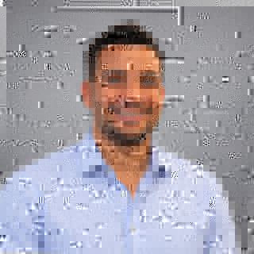

> Engenheiro de Dados · GCP · BigQuery · Dataflow · Dataform
Ingestão de sistemas Oracle para o BigQuery com Dataflow (Apache Beam) e arquitetura medalhão no Dataform, processando até 160 milhões de linhas por execução na área da saúde.
Aberto a oportunidades remotas e relocação (Canadá, Europa, EUA)
De mecânico de manutenção a engenheiro de dados.
Sou Engenheiro de Dados com mais de 4 anos na área de dados. Hoje construo pipelines ELT na Google Cloud para a área da saúde: levo dados de sistemas Oracle corporativos, incluindo um sistema de gestão hospitalar, para o BigQuery, organizados em camadas raw, bronze, silver e gold com Dataflow e Dataform.
Trabalho com SQL avançado, Python e CI/CD, sempre com foco em qualidade e governança de dados: reconciliação de contagens, validações de integridade e documentação de regras de negócio junto ao time de Governança.
Antes da tecnologia, foram mais de 9 anos na manutenção industrial como técnico e eletromecânico. Essa bagagem me ensinou a investigar a causa raiz dos problemas, algo que levo para cada pipeline: dado bom é dado que chega certo, no horário e com rastreabilidade.
Ferramentas que uso no dia a dia e as que estou aprendendo (borda tracejada).
Cada projeto tem repositório com código, README e diagrama de arquitetura.
Uma transição de carreira construída passo a passo.
Pipelines diários do sistema hospitalar (Oracle) para o BigQuery com Dataflow/Apache Beam, até 160 milhões de linhas por execução. Arquitetura medalhão no Dataform com modelo gold validado pelo negócio, fonte única para mais de 8 consumidores de dados.
Automação de consultas SQL e pipelines ETL em BigQuery e Oracle, eliminando mais de 15 horas de trabalho manual por semana. Dashboards estratégicos no Looker Studio sobre a rede de prestadores de saúde.
SQL complexo em Oracle, dashboards em Power BI (DAX) para 3 unidades de sinistros e relatórios self-service no MicroStrategy.
Mais de 9 anos nas indústrias gráfica, de borracha e de embalagens metálicas: hidráulica, pneumática e automação industrial.
Aprendizado contínuo.
Univesp · 2026 — em andamento
Certificação Google Cloud
Data Science Academy · mais de 400 horas
PUC Minas · 2022 — 2023
Univesp · 2022 — 2025
Faculdade SENAI Mariano Ferraz · 2013 — 2016
SENAI
Bayswater College, Canadá · 2025
Estou aberto a oportunidades em Engenharia de Dados. Fique à vontade para me chamar.